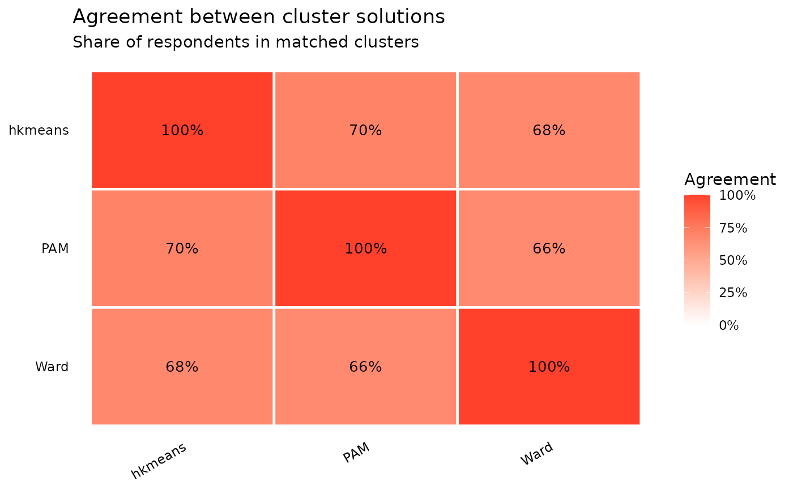

Compares the assignments of the same respondents by several cluster solutions, e.g. different algorithms with the same number of clusters. As cluster numbers are arbitrary (they only reflect the cluster sizes), the clusters of the solutions are first matched to each other, so that "cluster 2" stands for the same group of respondents in all solutions.
Arguments
- object
A named list of cluster solutions (
seg_clusterobjects, orseg_cluster_setobjects whose solutions are all used), e.g.list(hkmeans = cl_hk, PAM = cl_pam). The names are used as labels; unnamed solutions are labelled by their method.- reference
The solution that the others are aligned to: its name or position in
object. Defaults to the first solution.- verbose
Logical. Whether to print the results. Defaults to
TRUE.
Value
An object of class seg_agreement, a list with the elements:
pairwise: tibble with one row per pair of solutions: number of clusters,agreement,corrected_randandvi.matrix: matrix of the pairwise agreement.respondents: tibble with one row per respondent: the identifier, the aligned cluster of each solution, the most frequent cluster (modal_cluster; ties are resolved in favor of the reference), the number and share of solutions assigning the respondent to it (n_agree,share_agree) and whether all solutions agree (all_agree).aligned: named list of the solutions with clusters renumbered to match the reference (sizes, centers, assignment, memberships and plots are renumbered accordingly;predict.seg_cluster()returns the aligned numbers). Cluster numbers can have gaps if a solution has fewer clusters than the reference.crosstabs: named list of cross tables of the aligned clusters of each solution (rows) with the reference (columns); the diagonal contains the respondents assigned to matched clusters.plot: heatmap of the pairwise agreement.settings: list with the reference, the number of respondents and the share of respondents assigned to the same cluster by all solutions.
Details
Matching the clusters
For two solutions, the clusters are matched such that as many respondents
as possible are assigned to matched clusters (cross table with the largest
possible sum on the diagonal). This linear assignment problem is solved
with the Hungarian algorithm (clue::solve_LSAP()). If a solution has more
clusters than the reference, its unmatched clusters get new numbers after
the clusters of the reference (by size). Noise (cluster 0 of density-based
methods) is never matched to a cluster.
Measures
For every pair of solutions:
Agreement: share of respondents assigned to matched clusters (noise counts as agreement only if both solutions classify the respondent as noise). Easy to communicate, but depends on the matching and on the number of clusters (by chance alone, two random solutions with
kequally large clusters agree on about1 / kof the respondents after matching, somewhat more due to the matching).Corrected Rand index (Hubert & Arabie, 1985): agreement of the two solutions on all pairs of respondents (same vs. different cluster), corrected for chance agreement. 1 = identical, about 0 = no more than by chance. Independent of the cluster numbers.
VI, Meila's variation of information (Meila, 2007): information lost and gained when moving from one solution to the other. 0 = identical, larger values = more different.
The corrected Rand index and VI are computed with
fpc::cluster.stats(), with noise as a group of its own (as in
seg_validation()).
Requirements
The solutions must refer to the same respondents, i.e. be computed on the
same prepared data (e.g. the same output of seg_prep_data()). They are
matched by the identifier of the respondents. If some respondents are not
part of all solutions (e.g. different missing value strategies), only the
respondents of all solutions are compared (with a warning). The number of
clusters may differ (with a warning), but agreement is easiest to interpret
for solutions with the same number of clusters.
References
Hubert, L., & Arabie, P. (1985). Comparing partitions. Journal of Classification, 2(1), 193-218. doi:10.1007/BF01908075
Meila, M. (2007). Comparing clusterings - an information based distance. Journal of Multivariate Analysis, 98(5), 873-895. doi:10.1016/j.jmva.2006.11.013
See also
Other clustering:
predict.seg_cluster(),
seg_as_cluster(),
seg_cluster(),
seg_cluster_density(),
seg_cluster_fuzzy(),
seg_cluster_hierarchical(),
seg_cluster_hkmeans(),
seg_cluster_model(),
seg_cluster_partitioning(),
seg_dbscan_eps(),
seg_plot_centers(),
seg_plot_cluster(),
seg_plot_dend(),
seg_plot_heatmap()
Examples
# \donttest{
prep <- seg_prep_data(
sm_synthetic,
vars = dplyr::starts_with("F50_0_"),
id = "id",
missing = "mean",
verbose = FALSE
)
fit <- function(method) {
seg_cluster(prep, method, k = 4, plots = FALSE, verbose = FALSE)
}
agr <- seg_agreement(list(
hkmeans = fit("hkmeans"),
PAM = fit("pam"),
Ward = fit("agnes")
))
#>
#> ── Agreement of 3 cluster solutions ──
#>
#> 1400 respondents | reference: "hkmeans"
#> • hkmeans vs. PAM: 70% agreement, corrected Rand = 0.41, VI = 1.29
#> • hkmeans vs. Ward: 68% agreement, corrected Rand = 0.33, VI = 1.41
#> • PAM vs. Ward: 66% agreement, corrected Rand = 0.33, VI = 1.53
#> Same cluster in all solutions: 53% of the respondents
#> Results: `$pairwise`, `$respondents`, `$aligned`, `$crosstabs`, `$plot`
agr$pairwise
#> # A tibble: 3 × 7
#> solution_1 solution_2 k_1 k_2 agreement corrected_rand vi
#> <chr> <chr> <int> <int> <dbl> <dbl> <dbl>
#> 1 hkmeans PAM 4 4 0.704 0.412 1.29
#> 2 hkmeans Ward 4 4 0.677 0.329 1.41
#> 3 PAM Ward 4 4 0.665 0.328 1.53
agr$plot

agr$crosstabs$PAM
#> hkmeans
#> Cluster Cluster 1 Cluster 2 Cluster 3 Cluster 4
#> Cluster 1 354 66 212 17
#> Cluster 2 51 301 1 0
#> Cluster 3 0 0 144 56
#> Cluster 4 6 0 5 187
# Respondents assigned differently by the algorithms
dplyr::filter(agr$respondents, !all_agree)
#> # A tibble: 663 × 8
#> id hkmeans PAM Ward modal_cluster n_agree share_agree all_agree
#> <dbl> <int> <int> <int> <int> <int> <dbl> <lgl>
#> 1 1 1 2 1 1 2 0.667 FALSE
#> 2 3 4 3 3 3 2 0.667 FALSE
#> 3 4 3 1 3 3 2 0.667 FALSE
#> 4 5 3 1 1 1 2 0.667 FALSE
#> 5 7 2 1 1 1 2 0.667 FALSE
#> 6 13 2 1 2 2 2 0.667 FALSE
#> 7 15 3 3 1 3 2 0.667 FALSE
#> 8 23 4 1 1 1 2 0.667 FALSE
#> 9 26 4 4 1 4 2 0.667 FALSE
#> 10 28 3 1 1 1 2 0.667 FALSE
#> # ℹ 653 more rows
# Profiles of the aligned solutions: cluster 2 is the same group everywhere
agr$aligned$PAM$centers
#> # A tibble: 4 × 21
#> cluster F50_0_1 F50_0_2 F50_0_3 F50_0_4 F50_0_5 F50_0_6 F50_0_7 F50_0_8
#> <int> <dbl> <dbl> <dbl> <dbl> <dbl> <dbl> <dbl> <dbl>
#> 1 1 0.147 0.120 0.0641 0.0857 -0.111 -0.0623 0.0941 -0.107
#> 2 2 0.439 0.346 0.408 0.591 -0.330 -0.329 0.694 1.10
#> 3 3 -0.749 -0.426 -0.326 -0.860 0.930 0.603 -0.838 -0.364
#> 4 4 -0.508 -0.581 -0.608 -0.466 0.0130 0.182 -0.699 -1.24
#> # ℹ 12 more variables: F50_0_9 <dbl>, F50_0_10 <dbl>, F50_0_11 <dbl>,
#> # F50_0_12 <dbl>, F50_0_13 <dbl>, F50_0_14 <dbl>, F50_0_15 <dbl>,
#> # F50_0_16 <dbl>, F50_0_17 <dbl>, F50_0_18 <dbl>, F50_0_19 <dbl>,
#> # F50_0_20 <dbl>
# }